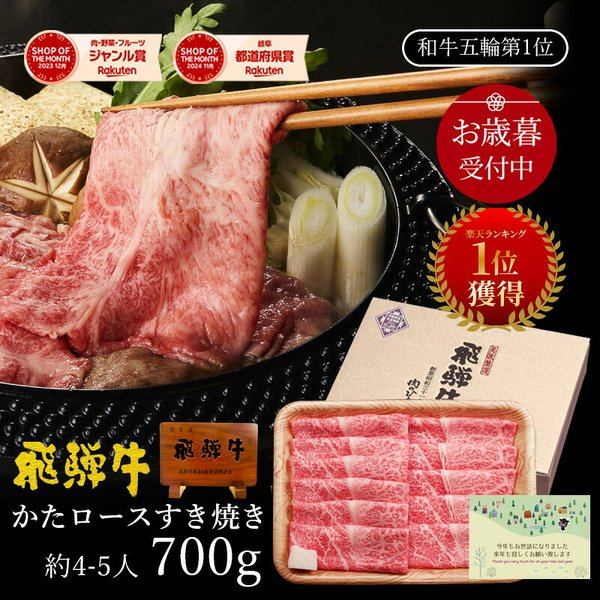
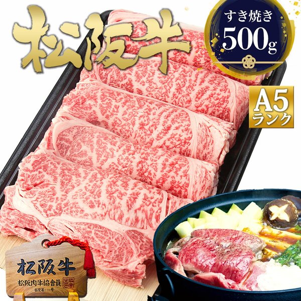
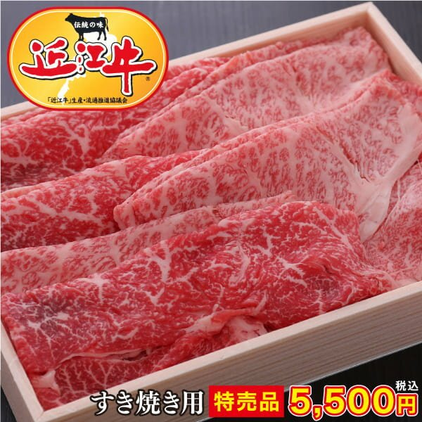
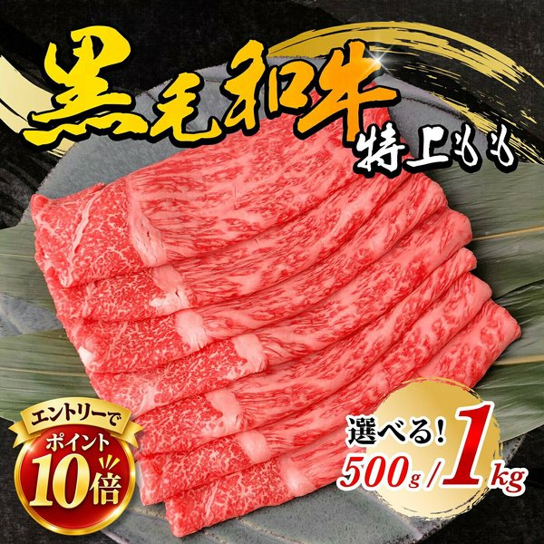
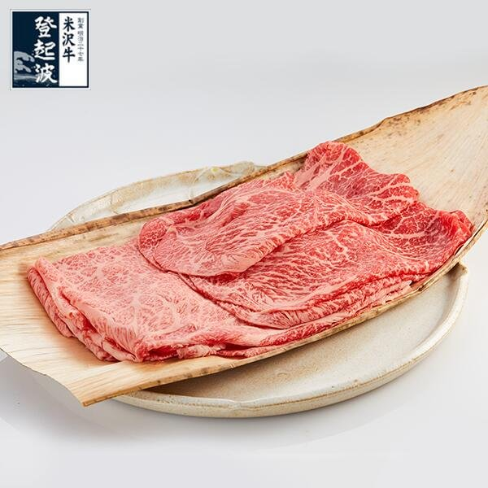
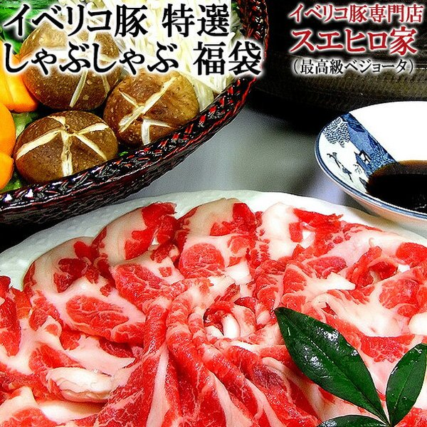
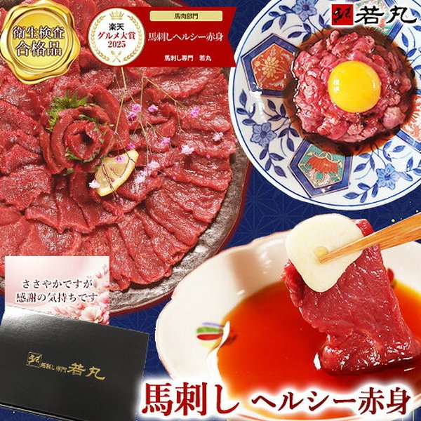
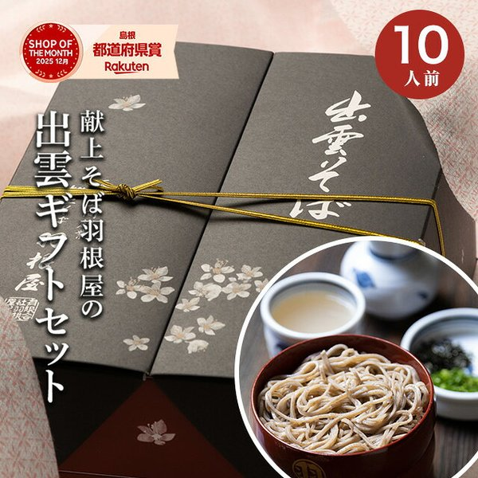
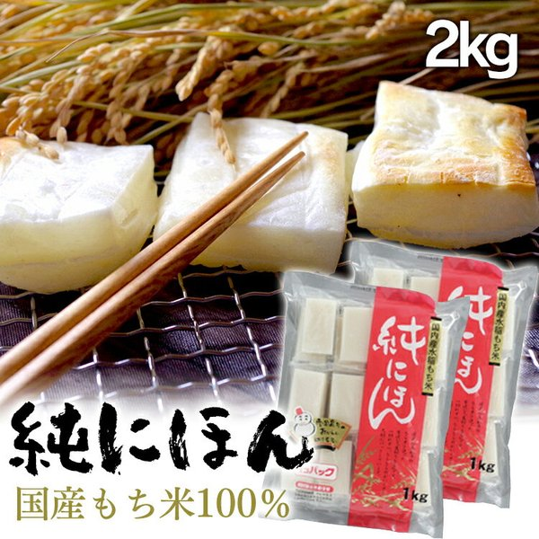

【2026年年末年始】家族が集まる食卓のごちそう！黒毛和牛すき焼き・しゃぶしゃぶ・松阪牛＆年越しそば・お餅お取り寄せ10選
年末年始は、外食より家で食べる人が増える時期です。帰省や家族の集まりに合わせて、いつもの食卓より少しだけ贅沢な肉と、年越しのそば・お餅を用意しておくと、当日は温めるだけで済みます。
選ぶ軸は、人数に対して量が足りるか、届いてから日持ちするか、そして温めるだけで出せるかです。すき焼き用の牛肉は、1人あたり150〜200gが目安なので、4人家族なら700g前後がちょうど1食分になります。しゃぶしゃぶ用は、赤身と霜降りで脂の重さが変わるため、家族の好みに合わせて選ぶと残りません。ローストビーフや馬刺しは、切って盛るだけで一品になるので、大晦日と元日の「あと一品」に便利です。年越しそばは、つゆ付きのセットを選ぶと、当日に買い足すものがなくなります。お餅は個包装の切り餅なら、焼く分だけ出せて、残りを長く保存できます。年末は配送が集中するので、12月中旬までに注文を済ませるのが確実です。
本記事では、楽天市場で人気・高評価の年末年始のごちそう10選を、実売価格とレビュー評価つきで写真付き紹介します。
- おすすめ10選 スペック・特徴比較表
- BEST 1｜飛騨牛 すき焼き肉 かたロース 700g（4〜5人前・化粧箱入）
- BEST 2｜松阪牛 ロース すき焼き肉 500g（A5ランク・霜降り）
- BEST 3｜近江牛 すき焼き・しゃぶしゃぶ用 特選肩ロース・モモ 500g
- BEST 4｜黒毛和牛 赤身特上もも シート巻き 500g〜2kg（くらしたロースも選択可）
- BEST 5｜米沢牛 特選お任せすき焼きセット（タレ付・340g/560g/700g/1kg）
- BEST 6｜イベリコ豚 ベジョータ しゃぶしゃぶ 福袋セット（金賞受賞）
- BEST 7｜三宿ローストビーフ 400g/600g/800g（200g×2〜4個・自家製ソース2種付）
- BEST 8｜馬刺し 赤身 ヘルシー（おつまみ・年越し用）
- BEST 9｜年越しそば 出雲そば ギフトセット 10人前（半生4袋・干し3袋・つゆ付）
- BEST 10｜純にほん 切り餅 2kg（1kg×2個・個包装・国産もち米100%）
- 【読者負担0円】買わなくても得する無料サービス
- まとめ：年末年始のごちそうお取り寄せ10選の選び方
| 順位 | 商品名 | ブランド | 最大の特徴・おすすめ理由 | 総合評価 |
|---|---|---|---|---|
| BEST 1 | 飛騨牛 すき焼き肉 かたロース 700g（4〜5人前・化粧箱入） | 飛騨牛（肉のひぐち） | 4〜5人前の700g | 4.68 |
| BEST 2 | 松阪牛 ロース すき焼き肉 500g（A5ランク・霜降り） | 松良（まつよし） | A5ランクの松阪牛ロース | 4.61 |
| BEST 3 | 近江牛 すき焼き・しゃぶしゃぶ用 特選肩ロース・モモ 500g | 近江牛（滋賀県から産地直送） | 肩ロースとモモの2部位 | 4.73 |
| BEST 4 | 黒毛和牛 赤身特上もも シート巻き 500g〜2kg（くらしたロースも選択可） | 籠元（かごもと） | 赤身のももで脂が少ない | 4.41 |
| BEST 5 | 米沢牛 特選お任せすき焼きセット（タレ付・340g/560g/700g/1kg） | 米沢牛 よねぎゅう | タレ付きですぐ始められる | 4.68 |
| BEST 6 | イベリコ豚 ベジョータ しゃぶしゃぶ 福袋セット（金賞受賞） | イベリコ屋 | 最高ランクのベジョータ | 4.63 |
| BEST 7 | 三宿ローストビーフ 400g/600g/800g（200g×2〜4個・自家製ソース2種付） | THE ROAST BEEF（SIRCARS） | 200gずつの個包装 | 4.66 |
| BEST 8 | 馬刺し 赤身 ヘルシー（おつまみ・年越し用） | 若丸（わかまる） | 赤身で脂が少ない | 4.34 |
| BEST 9 | 年越しそば 出雲そば ギフトセット 10人前（半生4袋・干し3袋・つゆ付） | 出雲そば 羽根屋 | 半生と干しの食べ比べ | 4.82 |
| BEST 10 | 純にほん 切り餅 2kg（1kg×2個・個包装・国産もち米100%） | アイリスフーズ | 国産もち米100% | 4.64 |
飛騨牛 すき焼き肉 かたロース 700g（4〜5人前・化粧箱入）

飛騨牛のかたロースを、すき焼き用に薄切りにして700g届けます。4〜5人前で、化粧箱入りのため、帰省の手土産やお歳暮にもそのまま使えます。かたロースは赤身と霜降りのバランスがよく、割下で煮ても肉の旨みが残ります。1人あたり150g前後になるので、4人家族なら野菜を足してちょうど1食分です。楽天市場での実売価格は約10,000円（2026年11月時点）。
- 4〜5人前の700g
- 化粧箱入りで贈答にも使える
- 赤身と霜降りのバランスがよいかたロース
- 年末は配送が混み合うので、12月中旬までの注文が安心
松阪牛 ロース すき焼き肉 500g（A5ランク・霜降り）

松阪牛のロースを、すき焼き用に500g届けます。A5ランクの霜降りで、口に入れると脂が溶けるように広がります。500gは4人で1食分の量なので、年末のごちそうとして、野菜と割下を用意すればすぐに鍋が始められます。薄切りなので、煮すぎないように、色が変わったらすぐに引き上げるのがおいしく食べるコツです。楽天市場での実売価格は約7,980円（2026年11月時点）。
- A5ランクの松阪牛ロース
- すき焼き用の薄切り
- 500gで4人1食分
- 500gは4人で1食分なので、大人数なら1kgに増やす
近江牛 すき焼き・しゃぶしゃぶ用 特選肩ロース・モモ 500g

滋賀県から産地直送で届く近江牛を、肩ロースとモモのスライスで500gまとめたセットです。すき焼きにもしゃぶしゃぶにも使える厚さで、1枚が大きいため、鍋に広げるときに重なりません。肩ロースは霜降り、モモは赤身で、同じ鍋でも味の変化を楽しめます。松阪牛や神戸牛と並ぶブランド牛を、5,500円台から試せるのが魅力です。楽天市場での実売価格は約5,500円（2026年11月時点）。
- 肩ロースとモモの2部位
- すき焼き・しゃぶしゃぶ両用
- 産地直送の近江牛
- クーポン利用が前提の価格なので、注文前に条件を確認する
黒毛和牛 赤身特上もも シート巻き 500g〜2kg（くらしたロースも選択可）

黒毛和牛の赤身特上ももを、シート状に巻いてスライスしやすい形で届けます。500gから2kgまで量を選べ、くらしたロースのセットに変更することもできます。ももは脂が少なく、しゃぶしゃぶにすると肉の甘みがはっきり出ます。シート巻きなので、必要な分だけ切って使え、残りを冷凍しておけます。楽天市場での実売価格は約4,536円（2026年11月時点）。
- 赤身のももで脂が少ない
- 500g〜2kgから量を選べる
- シート巻きで使う分だけ切れる
- 赤身中心なので、霜降りの脂が好きな人には物足りない
米沢牛 特選お任せすき焼きセット（タレ付・340g/560g/700g/1kg）

山形の米沢牛を、すき焼き用に切り分けたセットで届けます。340gから1kgまで量を選べ、自家製のタレが付いてきます。部位はお任せですが、赤身と霜降りが混ざるため、1枚ずつ味の違いを楽しめます。タレが付いているので、割下を作る手間がなく、鍋と野菜を用意するだけで始められます。楽天市場での実売価格は約5,400円（2026年11月時点）。
- タレ付きですぐ始められる
- 340g〜1kgから選べる
- 米沢牛の赤身と霜降り
- 部位はお任せなので、指定したい人は単品を選ぶ
イベリコ豚 ベジョータ しゃぶしゃぶ 福袋セット（金賞受賞）

スペイン産のイベリコ豚のなかでも、最高ランクのベジョータを使ったしゃぶしゃぶ用の福袋です。どんぐりを食べて育った豚は、脂に甘みがあり、しゃぶしゃぶにすると香りが立ちます。福袋タイプなので、部位の組み合わせは届いてからのお楽しみですが、ロースやバラなど複数の部位が入ります。牛肉とは違う味わいを、年末の食卓にもう1品足したいときに向いています。楽天市場での実売価格は約6,990円（2026年11月時点）。
- 最高ランクのベジョータ
- 複数部位が入る福袋
- 金賞受賞の定番
- 福袋のため、部位の指定はできない
三宿ローストビーフ 400g/600g/800g（200g×2〜4個・自家製ソース2種付）

熟成した赤身肉を低温で焼き上げた三宿ローストビーフを、200gずつ個包装で届けます。400g、600g、800gから選べ、自家製ソースが2種類付いてきます。切り分けるだけで皿に盛れるので、大晦日と元日の「あと一品」にちょうどいいです。赤身のため、脂っこさがなく、翌日にも食べられます。楽天市場での実売価格は約5,990円（2026年11月時点）。
- 200gずつの個包装
- 自家製ソース2種付き
- 切るだけで盛り付けられる
- 届いたら食べる日を決めて、冷蔵の期限を確認しておく
馬刺し 赤身 ヘルシー（おつまみ・年越し用）

熊本の馬刺し専門店が、赤身を食べやすい量で届けます。馬肉は牛肉より脂が少なく、高たんぱくで低カロリーなので、正月太りが気になる時期のおつまみにも向いています。しょうがとニンニク、甘めの醤油で食べると、赤身の甘みが引き立ちます。年末年始は、家族が集まる時間が長いぶん、さっと出せる一品があると助かります。楽天市場での実売価格は約2,999円（2026年11月時点）。
- 赤身で脂が少ない
- 切って盛るだけの一品
- 8年連続グルメ大賞の定番
- 評価は4.34と他の肉料理よりやや低めで、好みが分かれる
年越しそば 出雲そば ギフトセット 10人前（半生4袋・干し3袋・つゆ付）

島根の出雲そば店・羽根屋が、半生そば4袋と干しそば3袋（つゆ付）を10人前で届けます。半生と干しを食べ比べられるので、年越しの1杯と、正月の昼そばを別の食感で楽しめます。つゆが付いているため、当日に買い足すものがありません。そばは香りが命なので、ゆでる時間を短めにして、冷水でしっかり締めてください。楽天市場での実売価格は約6,450円（2026年11月時点）。
- 半生と干しの食べ比べ
- つゆ付きで10人前
- 日本三大そばの出雲そば
- 年末は注文が集中するので、12月20日までの注文がおすすめ
純にほん 切り餅 2kg（1kg×2個・個包装・国産もち米100%）

国産の水稲もち米100%で作った切り餅を、1kg×2個のセットで届けます。中身は個包装なので、焼く分だけ取り出せ、残りを乾燥させずに保存できます。雑煮、焼き餅、あんこ餅と、正月の餅料理は幅広く使えます。2kgあれば、4人家族で三が日を越して食べられます。楽天市場での実売価格は約2,280円（2026年11月時点）。
- 国産もち米100%
- 個包装で使う分だけ出せる
- 1kg×2個で2kg
- 2kgは場所を取るので、保存場所を先に決めておく
この記事の商品を買う前に、まずは無料で得する選択肢をチェック。どれも登録・利用は0円で、無料期間中に解約すれば料金はかかりません。読みたい雑誌がある人、ポイントを貯めたい人、アンケートなら気軽という人、それぞれに合うものを選べます。
初回31日無料・無料期間中に解約すれば0円 → 楽天ポイントモール｜登録無料で毎日ポイ活
買い物なしでもポイントが貯まる無料サービス → 楽天インサイト｜アンケートに答えてポイント
登録無料・すきま時間のアンケートで貯まる → 楽天カード｜年会費永年無料
新規発行・年会費ずっと0円 →
4つのサービスの違いと使い分けは「出費0円で得する！買わずにポイントが貯まる無料サービス厳選4選」でまとめています。
💡 まとめ：年末年始のごちそうお取り寄せ10選の選び方
年末年始のごちそうは、当日に買い物に出なくて済むように、12月中旬までに揃えておくのがいちばん確実です。すき焼きとしゃぶしゃぶは、人数×150〜200gで量を決め、赤身と霜降りを1種類ずつ用意すると、家族の好みが分かれても対応できます。ローストビーフと馬刺しは、切って盛るだけなので、料理をする時間がない日の主役になります。年越しそばは、つゆ付きのセットを選び、12月30日までに届く日程で注文してください。お餅は個包装の切り餅を2kgほど用意しておくと、雑煮にも焼き餅にも使えます。冷凍の肉は、届いたら使う日ごとに分けておくと、当日に解凍で慌てません。年末は配送が遅れやすいので、日時指定ができる商品を選ぶと安心です。
楽天市場では「5と0のつく日」や「お買い物マラソン」などのキャンペーンに合わせて購入すると、ポイント還元が最大化してお得に手に入ります。ぜひチェックしてみてくださいね。